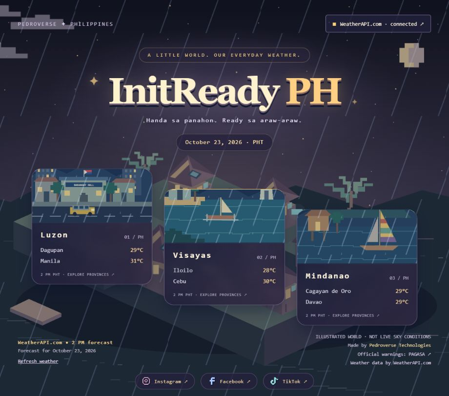

InitReady PH
In development · Filipino pixel weather worldHanda sa panahon. Ready sa araw-araw. A miniature Filipino village with softly futuristic Pedroverse details, animated island scenes and searchable province panels.

The interactive site is being developed locally. WeatherAPI.com is connected locally for six city forecasts and animated weather effects. All 82 provinces now have reference-location forecasts in the local app. Public hosting is still being prepared. This page is a project preview.